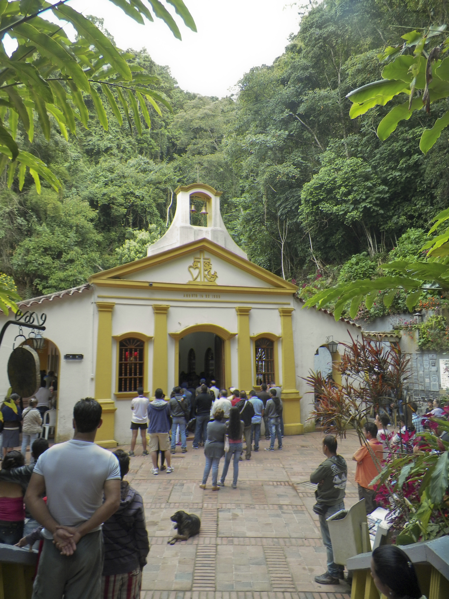
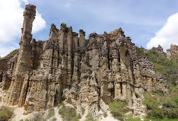

El Santuario de Nuestra Señora de las Gracias de Torcoroma
Es conocido localmente como Santuario del Agua de la Virgen es un sitio de veneración católica a la advocación de la Virgen de Torcoroma ubicado en Ocaña, Norte de Santander.

Complejo Histórico de la Gran Convención
En el complejo tuvo lugar la Gran Convención de 1828, en el que se reunieron los partidarios de Simón Bolívar, el presidente interino Francisco de Paula Santander, y otros próceres de la independencia con el fin de reformar la constitución de 1821.

Área Natural Única Los Estoraques
El área natural única Los Estoraques es una de las más pequeñas áreas protegidas de Colombia, abarcando tan solo 6,4 km² de superficie. Considerada única en su tipo por sus bellos paisajes quebradizos y erosionados